Novinky
HorseSutra
Pro ty z vás, kteří chtějí přijet na akci řádně připraveni, jsme nachystali několik tréningových poloh s koněm. Zájemci nechť nacvičují na trenažéru polohy dle vlastního výběru.
Pamatujte: Těžko na cvičišti, lehko (možná) na bojišti...
| Misionářská 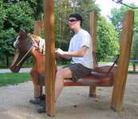 | Zasněná
|
| Mezi uši 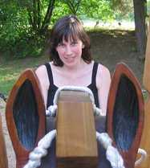 | HorseSurfing 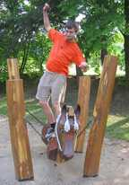 |
| Intelektuální 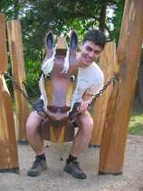 | S orlem na zádech 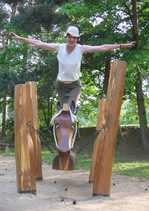 |
| Ležérní 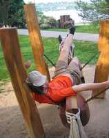 | Odosobněná 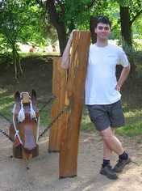 |
| Tandem 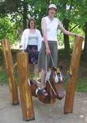 | Nohami hore 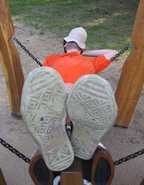 |
| Ve vysokých rychlostech 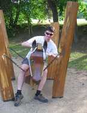 | Zaučování eléva 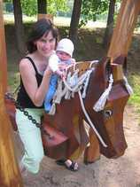 |
| Z jiné perspektivy 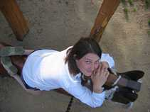 | Skrčenec 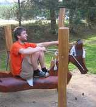 |
| Žárlivý trojúhelník 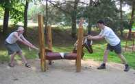 | |
Levitační 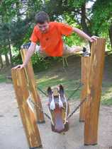 | Zezadu s nespolupracujícím partnerem 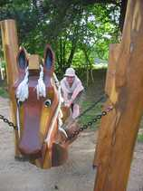 |